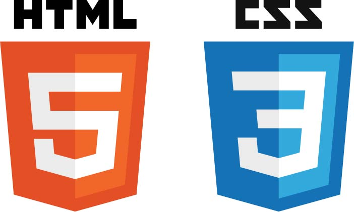

Lerndokumentation
Scroll
ÜK-101
Webauftritt gestalten und realisieren
In diesem Kurs haben wir gelernt wie man Webseiten erstellt mit HTML und CSS.

Hier geht es zur Dokumentaton
ÜK-403
Multimediaprodukte erstellen
In diesem ÜK haben wir gelernt wie man Videos Produziert.
Hier geht es zur Dokumentaton